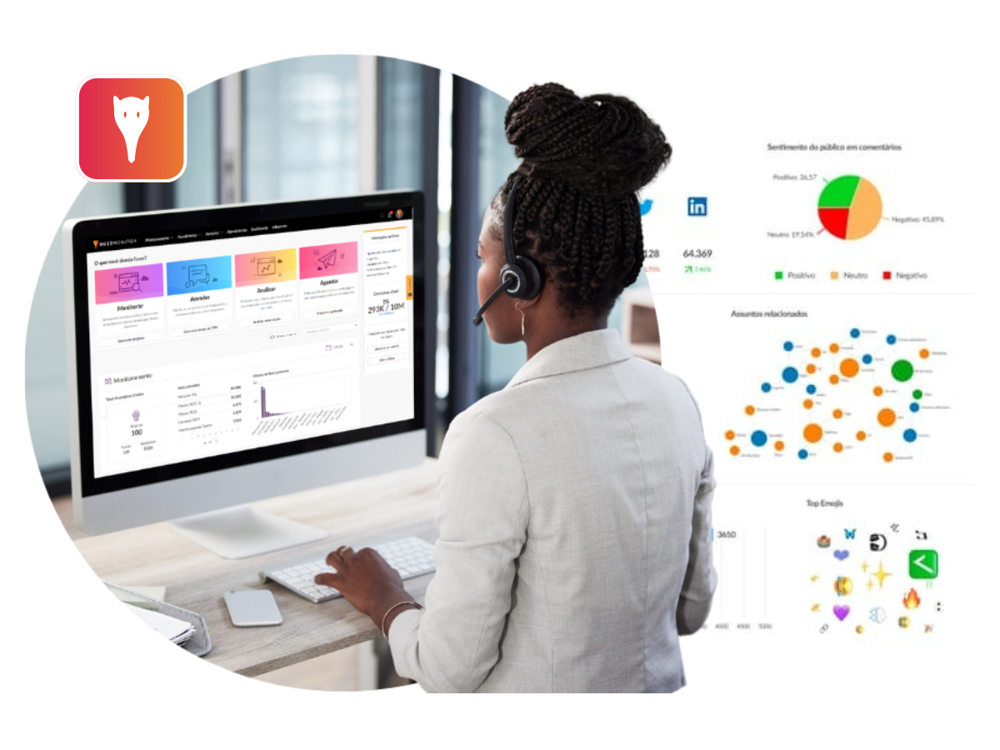
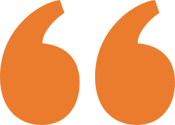

Descubra o que as pessoas estão dizendo sobre sua marca em tempo real.
Obtenha análises detalhadas do sentimento e dos seus concorrentes,
descubra oportunidades e reaja com agilidade.


Empresas que já confiam na Buzzmonitor


Visualize qualquer conversa sobre sua empresa
Acompanhe tendências e menções em tempo real
Economize horas de trabalho manual
Receba alertas inteligentes com base em temas e sentimentos
Entenda o que seus consumidores pensam sobre sua marca
Monitore concorrentes e influenciadores com profundidade
10k+
usuários ativos

360+
agências
❤️
10k+
usuários ativos
💡
360+
agências
💡
360+
agências
❤️
10k+
usuários ativos
Teste todas as soluções digitais em uma única plataforma. Liste nossas ofertas de IA, Social Listening e gestão de atendimento para entender como a Buzzmonitor pode ajudar sua equipe.
Monitoramento de redes sociais em diferentes canais
Atendimento multicanal e chatbot com IA
Relatórios de performance de marcas e concorrentes
Otimização de processos e produtividade com IA
Gestão completa da jornada do consumidor


A IA do Buzzmonitor atua como uma grande produtividade e inteligência de dados. Ela ajuda sua equipe a analisar publicações, comentários, conversas e sinais digitais com mais velocidade e profundidade.
A IA identifica padrões, resume conversas, gera análises e transforma grandes volumes de informação em insights estratégicos para orientar decisões de marketing, atendimento e comunicação.
Veja na prática
→
Monitore conteúdos em diferentes formatos, incluindo textos, imagens, vídeos e áudios publicados nas redes sociais. Acompanhe menções à sua marca, identifique oportunidades e entenda melhor o comportamento do consumidor.
Além disso, receba alertas automáticos sobre menções negativas em vídeos e áudios, para agir com velocidade antes que um tema ganhe proporção.
Agendar demonstração grátis

Antecipe os impactos de crises e acompanhe a conversa da sua marca em tempo real. Com a Buzzmonitor, você pode detectar sinais sensíveis rapidamente e agir antes que uma situação ganhe escala.
A plataforma ajuda a identificar picos de menções, sentimentos negativos, temas críticos e influenciadores envolvidos, permitindo que sua equipe acompanhe a evolução da crise com mais controle e segurança.
Agendar demonstração grátis● AI Insights
Fale com um de nossos consultores
no WhatsApp agora mesmo!

Ainda não está convencido?


Pablo Ferrer, Head of Social
Media na McCann
★★★★★
Conseguimos montar projetos de grande porte, do local ao global, com resultados muito valiosos e insights.


Leticia Saori Morita, Especialista
em conteúdo na TotalPass
★★★★★
É muito completa, tanto para a área de análise, estratégia e reporting quanto no atendimento aos nossos clientes.


Sérgio Leal, Diretor de Marketing
e Comunicação na McDonals.
★★★★★
A Buzzmonitor nos ajuda a gerenciar toda a informação que recebemos dos nossos consumidores e a responder com relevância.